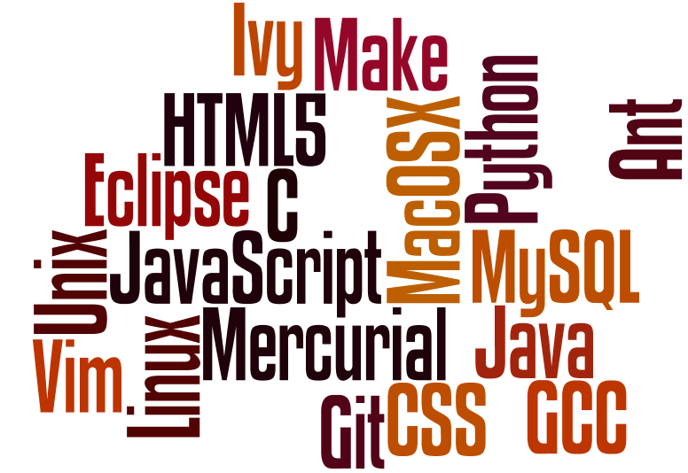

BSc Computational Physics at Heriot Watt University
MSc Advanced Computer Science at University of St. Andrews
Who am I?
I am a motivated student with a background in Physics and Computer Science interested in Data Mining and Robotics. I am also interested in designing and programming Embedded Systems.
Why Data Mining, Robotics or Embedded Systems?
What Skills Do I have?

Current Projects:
- ArchDoc: a tool to help software developers and software architects design and document the software architecture of the system.
- Mineframe: is a data mining framework written in Python and uses R to perform most of the statistical and machine learning operations, with the aim to automate most of the data mining processes.
- Mineview: is a web-based interface meant to be used on top of mineframe.
How to Reach Me?